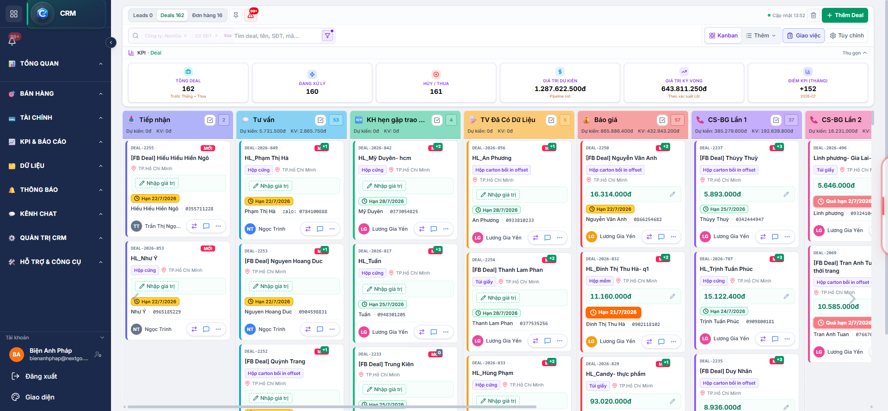
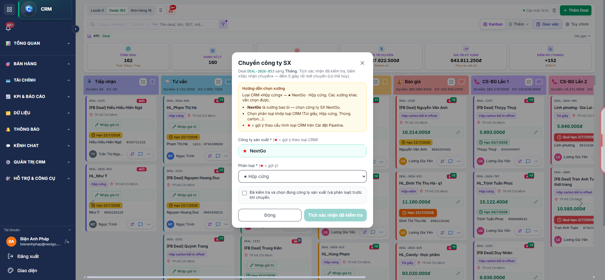
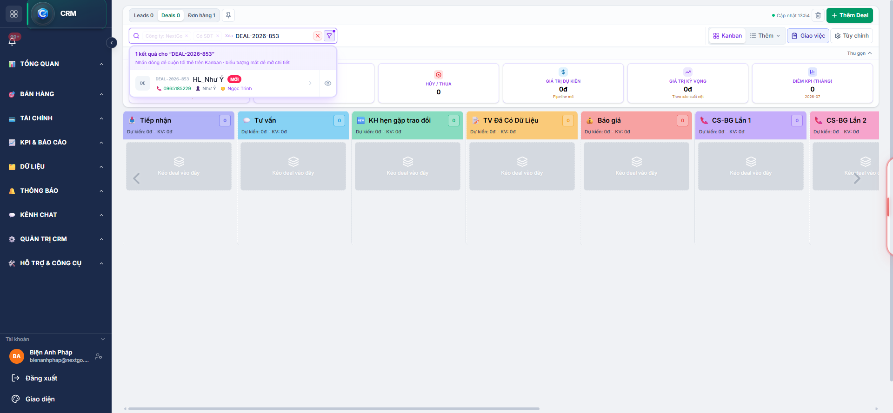
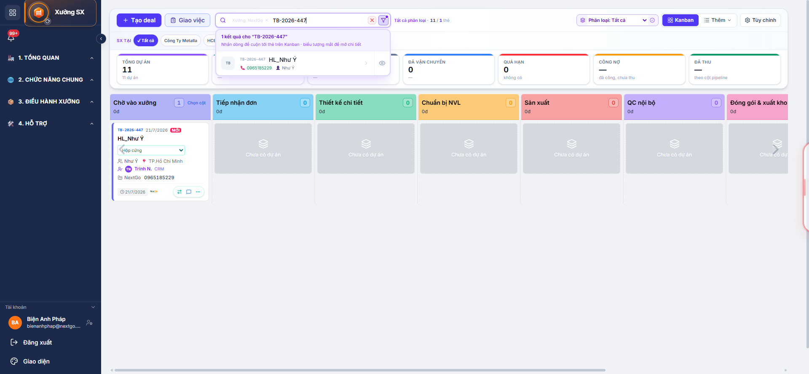

Mẫu thực tế: Công Ty TNHH Bao Bì NextGo (xưởng giấy / bao bì)
Deal DEAL-2026-853 → Dự án xưởng TB-2026-447 · Phân loại Hộp cứngv2.4.3
Cập nhật: 21/07/2026 · TuBep Pro
Tổng quan luồng
CRM Kanban (Deal) — lọc NextGo
→ Chuyển cột nhanh / kéo thả sang cột «Thắng»
→ Popup «Chuyển công ty SX»: chọn NextGo + phân loại bao bì → tích xác nhận → đếm 5s
→ Tự tạo dự án xưởng (mã TB-YYYY-NNN)
→ Xưởng SX: Kanban cột «Chờ vào xưởng»
→ Up file thiết kế (tab Tài liệu) + trao đổi qua tab Bình luận
→ CRM xác nhận → xưởng chuyển cột: Tiếp nhận đơn → Thiết kế → NVL → SX → QC → Đóng gói → Giao hàng
NVKD / Admin CRM
Chuyển deal sang cột Thắng, chọn xưởng NextGo và phân loại (Túi giấy / Hộp / Thùng carton…). Theo dõi bình luận và tài liệu từ xưởng.
Nhân viên Sản xuất
Nhận thẻ ở cột Chờ vào xưởng / Tiếp nhận đơn. Up file thiết kế tab Tài liệu; đính kèm file trong Bình luận khi cần.
Admin
Cấu hình pipeline xưởng giấy, phân loại (Túi giấy, Hộp cứng…) tại Pipeline xưởng / Bộ nhiệm vụ.
Chuẩn bị
Đăng nhập TuBep Pro (CRM hoặc Xưởng SX).
Lọc Công ty: NextGo trên CRM Dashboard.
Mở tab Deals (Kanban).
Deal cần chuyển phải chưa có dự án xưởng — thường ở các cột trước Thắng.
Bước 1 — CRM: Chuyển deal sang cột Thắng
1.1. Xác định deal trên Kanban
Vào CRM → Dashboard CRM → tab Deals (không dùng tab Leads).
Bộ lọc: Công ty NextGo.
Tìm deal (VD: DEAL-2026-853 — HL_Như Ý) ở cột trước Thắng.

Hình 1 — Deal trên Kanban CRM NextGo trước khi chuyển sang cột Thắng
Cách A (khuyến nghị): Bấm nút chuyển cột trên thẻ → chọn 🎉 Thắng.
Cách B: Kéo thả thẻ deal sang cột Thắng.
1.3. Popup «Chuyển công ty SX»
Ngay khi deal vào cột Thắng (chưa có dự án), hệ thống hiện popup bắt buộc:
Công ty sản xuất: chọn NextGo (xưởng bao bì).
Phân loại: Túi giấy / Hộp cứng / Hộp mềm / Hộp carton bồi in offset / Hộp carton / Thùng carton — ★ = gợi ý theo loại CRM.
Tích «Đã kiểm tra…» → bấm Xác nhận chuyển → đếm 5 giây (có thể Hủy).

Hình 2 — Popup chọn Công ty SX NextGo và phân loại bao bì
Deal chưa có dự án không được kéo thẳng sang các cột sau Thắng (Thiết kế chi tiết, Sản xuất, Giao hàng…). Phải chọn xưởng trước.

Hình 3 — Deal đã ở cột Thắng; badge SX «Chờ vào xưởng»
Bước 2 — Sản xuất: Deal ở cột Chờ vào xưởng
2.1. Mở module Xưởng SX
Bấm nút chuyển module trên sidebar: CRM → Xưởng SX.
Vào Deal vào xưởng (/sx/dashboard).
2.2. Lọc đúng xưởng và phân loại
Xưởng / Công ty Sản xuất: NextGo
Phân loại: Hộp cứng (khớp bước 1) — hoặc «Tất cả»
Tìm kiếm: TB-2026-447 hoặc tên khách
Pipeline NextGo: Chờ vào xưởng → Tiếp nhận đơn → Thiết kế chi tiết → Chuẩn bị NVL → Sản xuất → QC nội bộ → Đóng gói & xuất kho → Giao hàng → Hoàn thành.

Hình 4 — Dự án TB-2026-447 ở cột Chờ vào xưởng (Kanban SX NextGo)
Ghi chú: (1) Chip xưởng NextGo · (2) Cột Chờ vào xưởng · (3) Thẻ TB-2026-447 · (4) Phân loại Hộp cứng · (5) Badge CRM
Bước 3 — Tài liệu và bình luận
3.1. Tab Tài liệu — lưu file thiết kế / bản in
Từ Kanban, mở dự án TB-2026-447 (bấm tiêu đề thẻ).